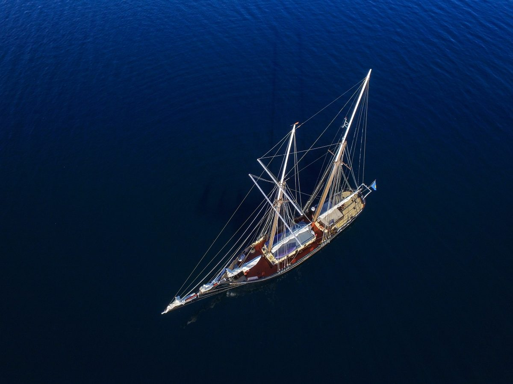
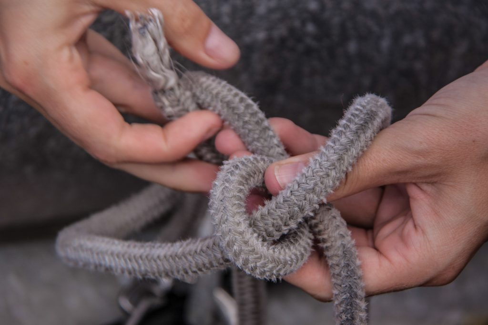
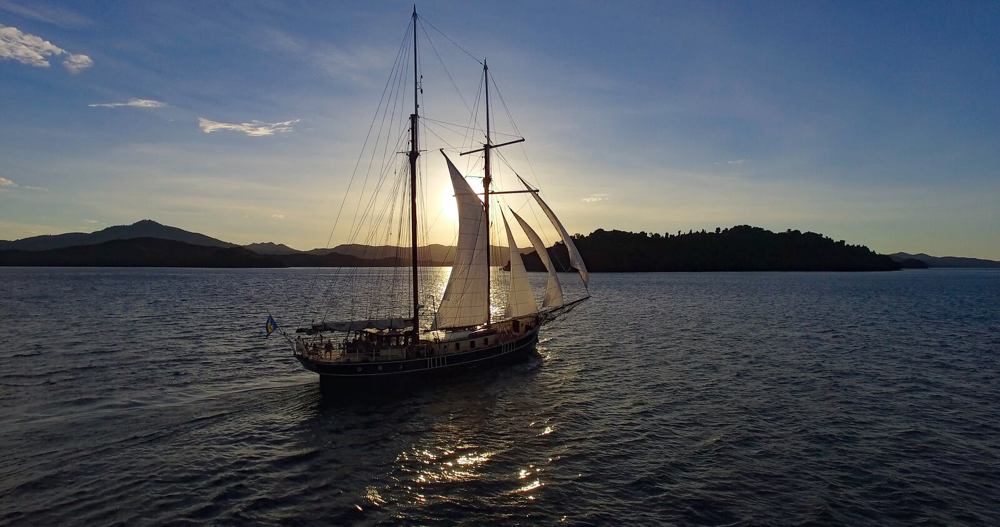

Five jobs in the yachting industry.
What a first officer, deckhand, engineer, chief steward and head chef actually do.
Working on yachts is a wonderful way to see the world, and it can become a long and rewarding career. It's also hard work that takes dedication and an eye for detail. Here are five of the jobs people work towards.
First officer
Also called the chief officer, the first officer is second in command after the captain and must be able to step into the captain's role at any time. That takes long experience and a thorough knowledge of the ship. Day to day, the first officer runs the deck and safety procedures, and often helps with trip planning, navigation, maintenance and managing the crew.
Deckhand
This is where most crew start. Deckhands look after everything on deck, from painting and varnishing to keeping the decks spotless. It's an entry-level job, but hard work and a good attitude get noticed, and the experience is the stepping stone to bigger roles.
Chief engineer
The engineer keeps the engines and every other piece of machinery on board running smoothly. Much of the work is maintenance, but a good engineer also thinks on their feet when something goes wrong.
Chief steward or stewardess
The chief steward runs everything inside the yacht and makes sure guests are comfortable, leading a team that handles cabins, cleaning, food and drink service and even excursions. They answer directly to the captain, and their job is never quite done.

Head chef
For many charter guests, the food is one of the highlights of the trip. The head chef plans the menus, sources ingredients wherever the yacht happens to be, and cooks to a high standard for guests with very different tastes and diets. Larger yachts also carry a second chef.
Start with the Sailing Academy
The Luna Moon Sailing Academy offers internationally recognised sail training with International Yacht Training Worldwide (IYT), taught on board by experienced instructors. Find out more about the Academy

Start your life at sea.
Ask about the Sailing Academy and internships.